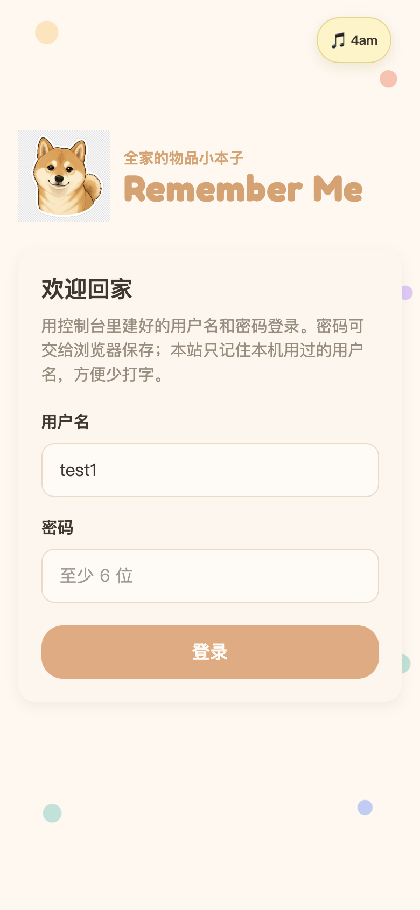
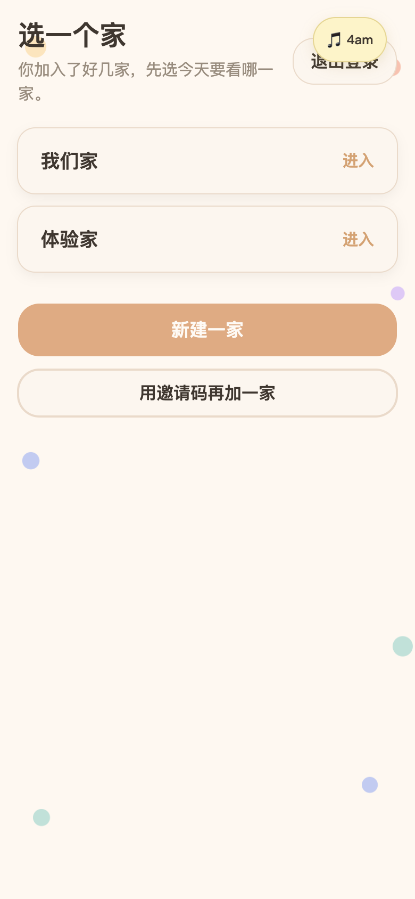
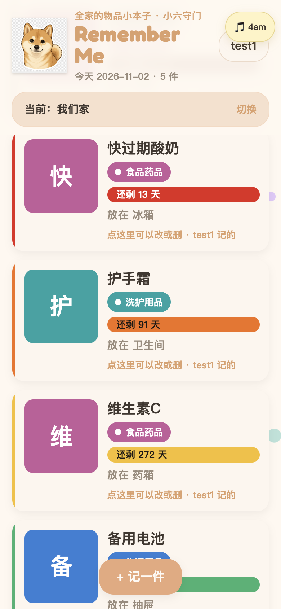
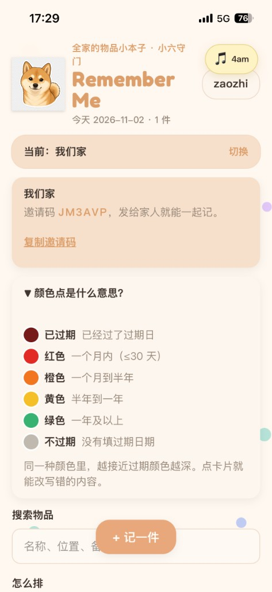
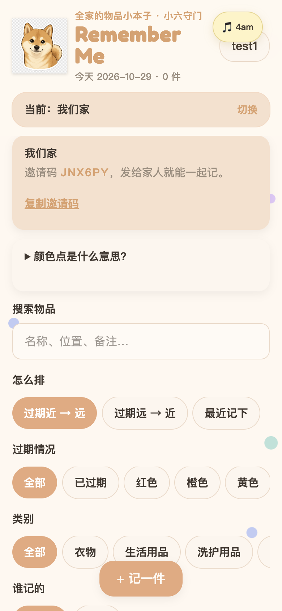

数据敏感度决定产品形态：私域信息就要登录与家庭边界；轻试用能力可以免登录。
问题
项目背景：家里的东西，为什么总对不上？
家里东西越买越多，常见几种遇到的情况：
- 忘了放在哪：钥匙、首饰、衣物等，要用时翻遍柜子。
- 过期了才发现：药品、调料、护肤品、零食等放着放着只能扔掉。
- 重复购买：不知道还有存货，又买了一份。
- 信息不共享：某一个人购买、存放的，其他家人不知道。
Core question
如何让一家人用同一份「物品小本子」，在需要时快速知道东西在哪、急不急处理， 同时又把家庭私密信息关在可控制的访问范围里？
目标
产品目标与定位
目标用户按角色拆开，避免做成「只有采购者爱用」的记事本：
| 角色 | 特点 | 主要需求 |
|---|---|---|
| 采购者 | 会主动录入 | 录入要快，操作简单 |
| 使用者 | 很少录入，偶尔查找 | 能快速搜到东西在哪 |
Positioning
相对「今天吃什么」：那个项目更像美团 / 大众点评等已有的平台可增加的决策能力层，而作为网页可以免登录点开即用。 Remember Me 要管的是家里私人物品与过期信息，需要家庭成员身份与家庭边界，因此更像独立 App 的雏形： 登录、家庭空间、云端同步、过期行动提示，都是产品本身，而不是外挂功能。
方案
产品方案设计
按打开页面的先后顺序：先进门（登录）→ 再记什么 → 过期颜色怎么读 → 怎么找、怎么切换家。
产品逻辑一览：从打开链接到清单上的主要动作。
打开链接 → 登录用户名 + 密码；账号由我开通
↓
只有一家
直接进入该家清单
有多家
先选家 / 建家 / 邀请码加入
↓
清单按过期紧急度着色排序打开时用过期日减今天现算，最急的在前
↓
记一件
搜索 / 过期·类别筛选
切换家 / 新建家
3.1 访问与形态：为什么要登录
「今天吃什么」可以免登录，因为试用成本低、数据敏感度相对较低。 Remember Me 记录的是药品位置、家用存货等家庭私域信息，不能做成谁打开都能看的公开页，所以必须登录。
当前访问策略
为了安全性和稳定性，不开放网页自助注册。 账号只在我这边开通：只有我配置过的账户+密码可以进入。 这是家庭小范围试用阶段的取舍，并非漏做注册。
形态选择
手机网页（PWA）+ CloudBase：不用上架审核，一个链接就能分享； 可添加到主屏幕。后端用腾讯云 PostgreSQL，国内访问更稳。
给面试官 / 同学试用，我专门开了体验账号（非正式家人账号）：
用户名 test1 · 密码 Abcd1234
打开方式与域名说明见 线上体验。


3.2 记什么：字段为行动服务
每件物品记录名称、价格、功能/用途、购买日期、过期日期、放置位置、备注、照片与类别。 清单默认按「谁最先过期」排在前面——核心问题是「什么该先处理」，不是「最近买了什么」。
3.3 过期颜色：把紧急程度变成一眼能懂的信号
| 剩余天数 d | 颜色 | 行动含义 |
|---|---|---|
| d ≤ 30 | 红 | 马上处理 |
| 30 < d < 180 | 橙 | 近期留意 |
| 180 ≤ d < 365 | 黄 | 心里有数 |
| d ≥ 365 | 绿 | 不用操心 |
| 已过期 | 深红 + 过期天数 | 单独一档，优先处理 |
同一档内越接近过期颜色越深，让最急的东西最显眼。剩余天数不靠定时任务「每天刷新」，而是打开时用过期日减今天现算，数字永远跟日历走。


3.4 查找与家庭
支持按过期情况、类别筛选，以及按名称 / 位置 / 备注关键词搜索。 一人可加入多个家庭并切换——对应「以后住别处仍要看旧家物品」的真实场景。

迭代
迭代与洞察
相对「今天吃什么」里更重的推荐测试，Remember Me 的迭代主要来自自己在使用中的观察和思考。 外部真实反馈目前明确可复述的只有一条（见下）。验证方式不同，不是偷懒，而是产品阶段与问题类型不同。
01
定位转折：从「我一个人用」到「全家一起用」
最早做成给自己用的管理个人物品的单机本子，数据只在本机。但生活在家庭中会用到很多家庭共用的物品，这些物品常常是一个人买、其他人找或者根本不知道这些物品的存在，直到过期了才被翻出来，造成了不必要的浪费。 于是定位改成全家共用：字段、过期颜色、账号与家庭空间都按多人场景重定。
02
先把主路径做顺，再接云端
登录和云端可以后接，但这个产品的核心功能————记录物品信息（功能、放置位置、什么时候过期）必须先顺。先在本地把录入和清单做清楚，再做家庭同步。 保质期快捷按钮少让人自己换算日历；排序默认「谁先过期」，更好地起到提醒作用。
03
自用观察驱动改版
自己试用觉得第一版页面设计太单调，删除和编辑的按键也不明显。于是加大触控区与类别标签，补上照片和排序筛选，让清单更一目了然、条目更好点击。 界面放了家里柴犬小六的卡通形象，进门可播放我的歌《4am》（可静音），把「家庭」感做进进门体验；装饰不喧宾夺主。
04
共享落地时的平台约束
登录用用户名 + 密码，考虑到用户只有本家庭成员所以没必要接微信登录和短信。腾讯云不允许网页自助开号，就去掉注册入口，账号只在控制台开通。 体验版只有 PostgreSQL，数据改走 SQL；前端从国内访问不稳定的 Vercel 迁到 CloudBase 静态托管，和后端同落腾讯云。
05
唯一外部交互反馈：按钮被挡住了
一位家庭成员在手机上试，发现音乐控件挡住了「保存」，电脑宽屏上看不出来。把保存改到底部主按钮，音乐改成可拖、可贴边的小钮。 功能步骤没变，真机可用性过关。这也提醒了我这个产品的使用设备是手机，所以我在进行页面设计的时候应该考虑的是手机用户的使用体验。
06
自用提出：一家不够用，分类也不够找——多家切换 + 关键词搜索
自用发现以后可能会到别的城市生活，新家和旧家物品需要查看；东西多了单靠过期 / 类别不好找。于是支持一人多家（多家时先选家，顶栏可切换），并加关键词搜索（可与原筛选叠加）。 库表本来就允许多家，这次主要改前端认家逻辑，没有改表结构。
07
默认域名能开着开着变成下载——排查后改成诚实说明
默认域名有时正常、有时出风险页、有时下载 index.html；电脑曾能开后一直下载，手机删快捷方式再输网址又恢复。
是平台对未备案域名的策略，和打开方式、风险 Cookie 有关；经过尝试发现重传无效。短期解决方案是写清试用说明，根本解法是申请备案域名（目前正在申请中）。
方法
过程方法：从翻聊天的痛苦，到开发日志 Skill
整理第一个作品集（今天吃什么）时，我需要翻大量对话才能拼出「当时为什么这么做」，过程很痛苦，也容易漏掉决策理由。
所以做 Remember Me 时，一开始就加了硬约束：每完成一步，就同时记录在开发日志中：做了什么、为什么、遇到什么问题、怎么解决、有没有反馈。 这份记录后来收成可复用的 Skill，让之后的项目默认带着「外人也能读懂」的过程资产，不需要事后再费力整理。
Why this matters
「今天吃什么」让我确认：复杂推荐必须靠测试验证假设。 Remember Me 则是在家庭私域与平台约束里，把工具真正做成可上线的形态，并把复盘方法固定下来。
展望
未来优化方向
可点户型图
- 当前位置靠文字字段 + 照片说明「放在哪」，清单和搜索已能按位置找。
- 局限对不熟家里布局的人不够直观；平面图更贴「家庭本子」，但画图与维护成本高。
- 未来把家（含柜 / 箱 / 桌）做成可点平面图来标位置；家不大且照片够用时后做。
小六语音入口
- 当前记下、查找都靠点选与打字；小六形象主要承担家庭氛围，不承担输入。
- 局限录入字段多时手机打字成本高；口语「帮我记一下药箱里的感冒药」更自然。
- 未来点柴犬说话完成「记下」或「找东西」（背后分流即可）；先过语音识别与口语结构化。
备案自定义域名
- 当前线上用 CloudBase 默认域名，可能出风险页或下载
index.html。 - 局限和机型无关，和打开方式、风险 Cookie 有关；试用说明不得不写得很长。
- 未来正在申请备案域名；绑上后去掉这层限制，链接可直接当正常网站分享。
收获
项目收获
平台约束会改产品设计：不能网页自助注册时，诚实改成「控制台开号 + 只登录」比留一个必失败的按钮更好。
上线约束也要写进产品说明：默认域名的风控和机型无关，和打开方式、风险 Cookie 有关；说不清就会误导试用的人。
真机反馈不可替代：一条「按钮被挡住」就足以推翻桌面上看起来合理的布局。
验证强度要匹配问题：推荐机制需要更多结构化测试；生活工具在早期可以主要靠自用观察，但要诚实写明证据边界。
过程资产本身也是作品：开发日志 → Skill，把第一次作品集的坑变成第二次的默认能力。
把家里的私域工具做成可上线的形态，比多堆功能更重要：约束要写进设计，说明要写给试用的人听懂。
Demo
线上体验
已部署到 CloudBase。请用体验账号登录（非正式家人账号）：
用户名 test1 · 密码 Abcd1234
请用系统浏览器（Safari / Chrome）在地址栏打开完整链接。
当前仍是腾讯云默认域名：可能先出风险提示（点确认即可），也可能下载 index.html——手机、电脑都可能遇到，和打开方式、是否还在风险 Cookie 有效期内有关；请勿依赖主屏幕快捷方式。
我正在申请备案域名，绑定后即可去掉这层限制。重传部署解决不了这个问题。